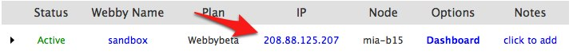

Setting up DNS for your domain
A simple illustrated walkthrough of what’s necessary to make your domain work with your Webby.
Requirements
- Setup Name Servers on your registrar to point to
NS1.DNSWEBBY.COMandNS2.DNSWEBBY.COM
Preparation
In order to execute this tutorial it is necessary that you visit your registrar’s webpage (GoDaddy, eNom, Network Solutions, etc.) and set your domain’s Name Server 1 (NS1) and Name Server 2 (NS2) to point to NS1.DNSWEBBY.COM and NS2.DNSWEBBY.COM, respectively.
Here’s one example of that setting in GoDaddy’s DNS Manager:
Configuration
After setting up the Name Servers, it’s time to log into Webbymanager and access the DNS tab (1) and click the New zone button (2):
A little background
DISCLAIMER: This is a high level abstraction of how DNS works. Actual DNS specification is much more complex than what’s outlined here
Domain Name Servers are servers that receive inquiries from the internet about where “areas” of your domain are located. Each domain is a zone. For instance, when you visit http://www.webbynode.com, the “zone” part of the domain (or the Top Level Domain – TLD) is webbynode.com.
Each DNS Zone has any number of records. The simplest way to handle domains and subdomains is to create records of the types A (primary) and CNAME (redirection) records.
Goals of the DNS configuration
Before getting started, let’s see what DNS entries we need.
For this tutorial, pretend we have registered the dnskings.com domain. We want http://www.dnskings.com to point to our Webby, along with http://dnskings.com.
Before starting the proper configuration, we need to get the IP Address of our Webby. That can be obtained on the Webbies tab in the Webbymanager:

So, now that we know our Webby’s IP is 208.88.125.207, let’s create our zone.
Zone configuration
Enter dnskings.com in the Domain field and click the Save zone button. Don’t worry about the other settings here, they are advanced settings and are out of the scope of this tutorial. If all went well, you should see something like the page below:
Now click on the Records link.
Records configuration
When you click Records, you should see an empty records list like the one below. Click the New record button to add your first record:
On the new page, you should make sure A is selected for the Type field (1), enter www in the Name field (2), your Webby’s IP (in our case 208.88.125.207) (3) and then click Save record (4). This should be enough for http://www.dnskings.com to work.
Again, don’t mind the other options for now. If you did everything right, you should see something like the picture below. Once you confirm everything is fine, let’s add another record by clicking the New record button again.
Add a new record, just like the one before, but this time leave the Name empty. This will make http://dnskings.com work too. Here are the settings again:
And how things should look when properly setup:
At this point, once your registrar’s settings are propagated, you should be able to visit both of your addresses and get to your Webby.
Happy coding!